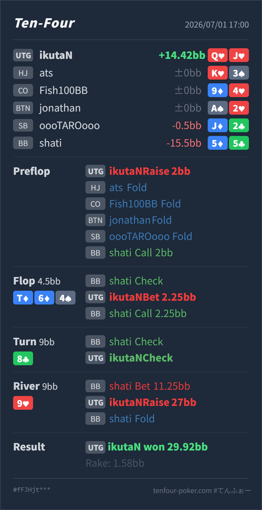

T4 HAND REVIEW
UTG Q♥J♥ の BB defend pot / river nuts raise レビュー
GTO基準で大きくズレたハンドではありません。flop の 1/2 pot c-bet はやや攻撃寄りですが、turn で無理に2発目を打たず、river で nuts に改善して BB の overbet lead に value raise した判断は良いです。
Hero: UTG
Q♥ J♥Villain: BB
5♦ 5♣Board:
T♦ 6♦ 4♠ 8♣ 9♥- 主要論点:
T♦ 6♦ 4♠のような低めの2トーンボードで、UTG側がQ♥J♥をどれだけ c-bet に回すか。 - GTO基準の総評: preflop open、turn check-back、river raise は自然です。flop はbetしてもよいですが、no diamond の broadway なので check-back も十分混ぜたい hand です。
- 次回の判断基準: river で nuts に改善したら、相手の大きいbetを「強いからcall止め」と見ず、worse straight や過剰valueから取れるかを先に見る。
- 5枚役確認: River時点のHeroは
Q♥ J♥ T♦ 9♥ 8♣のQハイストレートです。board は unpaired かつ flush なしなので、上位役はなく nuts です。
ハンド要約
- Hero
- UTG
Q♥ J♥ - Villain
- BB
5♦ 5♣ - 形式
- T4 6MAX Cash
- Board
T♦ 6♦ 4♠ 8♣ 9♥- ライン
- UTG openにBB defend。flop c-betはcallされ、turn check-back後、riverでBBのoverbet leadにUTGがraiseしてBB fold
- Showdown
- なし
- Result
- UTG Hero won
29.92BB, rake1.58BB

判断のズレ
| 論点 | その場で置きがちな見立て | どこがズレやすいか | 次回の基準 |
|---|---|---|---|
| flop c-bet の自動化 | UTG open後でovercardが2枚あるので、BB checkに対して半potで押せそう | T64 two-tone はBB側にset、two pair、pair + draw、diamond draw、straight draw が多く残るボードです。Q♥J♥ はno pair / no diamondで、callされた後にbarrelしやすいturnも限られます。 | 低い2トーンボードでは、overcardだけで半potを標準化しない。backdoorやblockerが薄い broadway はcheck-backも混ぜる |
| river nuts のvalue raise | BBのoverbet leadは強そうなので、nutsでもcallで安全に終わりたくなる | turn check-check後のriver leadはpolarですが、広く守るBBには lower straight やtwo pair、setの過剰valueも残り得ます。Heroの QJ は最上位なので、call止めにすると下のvalueから取り逃がします。 | nutsはraise候補。ただしbluffを消しすぎないよう、all-in級ではなく今回のような小さめraiseから考える |
ストリート別レビュー
| ストリート | その時点の見え方 | 実ハンドの位置づけ | 評価 | その場の一手 |
|---|---|---|---|---|
| Preflop | UTG の 2BB open は基準サイズです。BB は UTG open に対しても pocket pair、suited broadway、suited connector を広めにdefendできます。 | Q♥J♥ はUTG openに入る自然な suited broadway です。 | 良い | openで問題ありません。BB call後は、相手に小中 pocket や低め connected hand が残る前提で進めます。 |
Flop T♦ 6♦ 4♠ | UTGにはoverpairや強いTxがありますが、BBにはset、two pair、pair + straight draw、diamond drawが厚く残ります。 | Heroはno pair / no diamond の2 overcardで、runner-runnerのstraight要素はありますが現状のequityは強くありません。 | やや攻撃寄りだが可 | betするなら小さめから半pot程度で、fold equityを取りに行く形です。毎回打つ hand ではないので、check-backも自然です。 |
Turn 8♣ | BBのflop call後なので、Tx、6x、pocket pair、diamond draw、75、7x系が残ります。8はBB側のconnected handをかなり助けます。 | Heroは9でnutsになるgutshotです。showdown valueは薄く、2発目で降ろし切るにはblockerも足りません。 | 良い | check-backでequityを実現する判断が自然です。ここで無理にbarrelすると、callされたときにriverの選択が難しくなります。 |
River 9♥ | BBのoverbet leadは、straight以上のvalueとmissed diamond / missed straight draw のbluffに寄ったpolar lineです。turn check-backでUTG側が少しcappedに見えるため、BBが先に圧をかけやすい形です。 | HeroはQハイストレートでnutsです。広く守る相手の lower straight や一部の過剰valueから追加で取れる位置です。 | 良い | raiseでよいです。サイズは大きすぎるとbluffを全部消し、下のstraightも苦しくするため、今回のような小さめraiseは実戦的です。 |
持ち帰り
- UTG vs BB の低い2トーンボードでは、overcardだけでc-betを自動化しない。
- turn check-back後にriverで相手がpolarに打ってきても、nutsはcall止めにせず value raise を検討する。
- river raise は「勝っているか」だけでなく、相手がcallし得る下のvalueと、foldするbluffの比率を分けてサイズを決める。
exploit 補足
- 実際のBBは
5♦5♣で、flopはpair + straight draw、riverはmissed drawをoverbet bluffに変えています。 - この相手が turn check-back後にmissed drawを強く打てるなら、Heroのmedium strength handではcallしすぎに注意します。一方で今回のようなnutsは、bluffを含むrangeに対してもvalue raiseを残します。